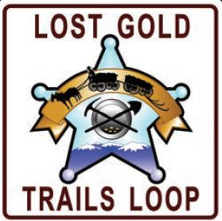
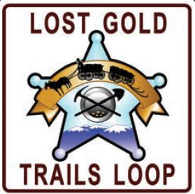

Nez Perce (Nee-Me-Poo) National Historic Trail
Congress passed the National Trails System Act in 1968, establishing a framework for a nationwide system of scenic, recreational, and historic trails. The Nez Perce (Nimíipuu or Nee-Me-Poo) National Historic Trail stretches from Wallowa Lake, Oregon, to the Bear Paw Battlefield near Chinook, Montana. It was added to this system by Congress as a National Historic Trail in 1986.
The 1877 flight of the Nez Perce from their homelands while pursued by U.S. Army Generals Howard, Sturgis, and Miles, is one of the most fascinating and sorrowful events in Western U.S. history. Chief Joseph, Chief Looking Glass, Chief White Bird, Chief Ollokot, Chief Lean Elk, and others led nearly 750 Nez Perce men, women, and children and twice that many horses over 1,170 miles through the mountains, on a trip that lasted from June to October of 1877.
Forced to abandon hopes for a peaceful move to the Lapwai reservation , the Nez Perce chiefs saw flight to Canada as their last promise for peace. The flight of the Nez Perce began on June 15, 1877. Pursued by the Army, they intended initially to seek safety with their Crow allies on the plains to the east. Their desperate and circuitous route as they tried to escape the pursuing white forces is what we now call the Nez Perce National Historic Trail.
It enters Idaho at Lewiston and cuts across north-central Idaho, entering Montana near Lolo Pass. It then travels through the Bitterroot Valley, after which it re-enters Idaho at Bannock Pass.